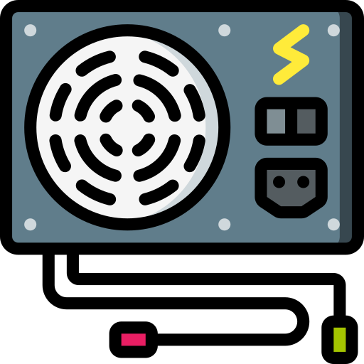

Unidad 3. Selección de componentes para ensamble de equipo de cómputo
3.1 Chipset

El chipset es un conjunto de componentes electrónicos que se encargan de coordinar el funcionamiento de los diferentes elementos de una placa base. Estos
componentes se dividen en dos partes principales: el Northbridge y el Southbridge. El Northbridge se encarga de gestionar la comunicación entre el procesador y la
memoria RAM, así como de controlar la velocidad del bus frontal. Por su parte, el Southbridge se encarga de gestionar la comunicación entre el procesador y los
dispositivos de entrada/salida, como discos duros, tarjetas gráficas o unidades ópticas.
El chipset es una pieza clave en el funcionamiento de un ordenador, ya que permite que todos los componentes trabajen juntos de manera coordinada y eficiente.
Además, el chipset también influye en la capacidad de expansión del sistema, ya que determina el tipo de procesador y memoria RAM que se pueden utilizar, así como
el número y tipo de dispositivos que se pueden conectar.
3.1.1 Unidad Central de Procesamiento (CPU)
La Unidad Central de Procesamiento, o CPU por sus siglas en inglés, es el cerebro de un ordenador. Se encarga de procesar la información y ejecutar las
instrucciones que se le envían desde el sistema operativo y las aplicaciones. La CPU está compuesta por varios elementos, entre los que destacan la unidad de
control, la unidad aritmético-lógica y la memoria caché.
La unidad de control se encarga de coordinar el funcionamiento de la CPU, gestionando el flujo de datos y controlando el acceso a la memoria RAM. Por su parte, la
unidad aritmético-lógica es la encargada de realizar las operaciones matemáticas y lógicas necesarias para procesar la información. Finalmente, la memoria caché es
una memoria de alta velocidad que se utiliza para almacenar temporalmente los datos y las instrucciones más utilizadas, con el fin de acelerar el acceso a los
mismos.
3.1.2 Controlador del Bus
El controlador del bus es un componente del chipset que se encarga de gestionar el tráfico de datos entre la CPU y el resto de los dispositivos conectados a la
placa base. El bus es un conjunto de líneas de comunicación que se utilizan para transferir datos y señales de control entre los diferentes componentes del sistema.
El controlador del bus se encarga de coordinar estas transferencias, garantizando que los datos lleguen a su destino de manera eficiente y sin errores.
Además de gestionar el tráfico de datos, el controlador del bus también se encarga de controlar la velocidad del bus frontal, que es la velocidad a la que se
comunican la CPU y la memoria RAM. Esta velocidad es un factor clave en el rendimiento del sistema, ya que determina la velocidad a la que se pueden procesar y
transferir los datos.
3.1.3 Puertas de Entrada Salida E/S
Las puertas de entrada/salida, o E/S por sus siglas en inglés, son los componentes encargados de gestionar la comunicación entre el ordenador y los dispositivos
externos, como teclados, ratones, impresoras, discos duros externos, etc. Estas puertas se conectan al bus del sistema a través del Southbridge del chipset, y se
encargan de controlar la transferencia de datos entre el ordenador y los dispositivos externos. Algunos puertos de E/S que hay son:
-
USB (Universal Serial Bus): es uno de los tipos de E/S más utilizados en los ordenadores modernos. Permite la conexión de dispositivos externos como ratones,
teclados, cámaras, discos duros, etc. y se encuentra en diferentes versiones según la velocidad de transferencia de datos.
-
HDMI (High-Definition Multimedia Interface): es un puerto que se utiliza para conectar dispositivos de audio y video de alta definición, como televisores,
monitores, reproductores de DVD o Blu-ray, entre otros.
-
Ethernet: es un puerto que se utiliza para la conexión a Internet por cable, permitiendo la transferencia de datos de alta velocidad entre el ordenador y otros
dispositivos de red.
- Puerto serie: es un puerto de E/S que se utiliza para la conexión de dispositivos antiguos, como algunos tipos de impresoras o escáneres.
- Puerto paralelo: es otro puerto de E/S que se utiliza para la conexión de dispositivos antiguos, como algunos tipos de impresoras o escáneres.
- VGA (Video Graphics Array): es un puerto que se utiliza para conectar monitores de ordenador y proyectores.
-
DVI (Digital Visual Interface): es otro puerto que se utiliza para la conexión de monitores de ordenador y proyectores, ofreciendo una calidad de imagen superior
al VGA.
-
Thunderbolt: es un puerto que permite la conexión de dispositivos externos de alta velocidad, como discos duros, monitores, y adaptadores de red. Thunderbolt es
compatible con USB y DisplayPort, lo que lo convierte en una opción versátil.
-
FireWire: también conocido como IEEE 1394, es un puerto de E/S que se utiliza para la conexión de dispositivos de audio y video, así como discos duros externos y
cámaras de video.
- PS/2: es un puerto que se utiliza para la conexión de teclados y ratones antiguos.
-
DisplayPort: es un puerto que se utiliza para la conexión de monitores y televisores de alta definición, y ofrece una calidad de imagen superior a la del VGA.
3.1.4 Controlador de Interruptores
El controlador de interruptores es un componente importante en los sistemas informáticos, que se utiliza para gestionar la transferencia de datos entre dispositivos
periféricos y la CPU. Este controlador tiene la función de supervisar la aparición de interrupciones de dispositivos periféricos y notificar a la CPU. También puede
manejar solicitudes simultáneas de varios dispositivos periféricos, enrutándolas a la CPU para su procesamiento.
Las funciones principales del controlador de interruptores son las siguientes:
- Supervisar y manejar las interrupciones de los dispositivos periféricos.
- Enviar la señal de interrupción a la CPU para notificarla de la aparición de la interrupción.
- Arbitrar entre solicitudes simultáneas de dispositivos periféricos para evitar conflictos en el acceso a los recursos de la CPU.
- Proporcionar una interfaz entre los dispositivos periféricos y la CPU.
3.1.5 Controlador de Acceso Directo a Memoria
El controlador de acceso directo a memoria (DMA, por sus siglas en inglés) es un componente del hardware de una computadora que permite la transferencia de datos
entre dispositivos periféricos y la memoria del sistema sin la intervención de la CPU. El uso de DMA puede mejorar significativamente la velocidad de transferencia
de datos en comparación con los métodos de transferencia en los que la CPU tiene que estar involucrada.
Algunas de las funciones y características importantes del controlador DMA son las siguientes:
- Permite la transferencia directa de datos entre dispositivos periféricos y la memoria del sistema sin la intervención de la CPU.
- Aumenta la velocidad de transferencia de datos en comparación con los métodos en los que la CPU tiene que estar involucrada.
- Puede manejar varias transferencias de datos simultáneamente.
- Proporciona una interfaz entre los dispositivos periféricos y la memoria del sistema.
- Utiliza canales DMA para manejar varias transferencias de datos simultáneamente.
3.1.6 Circuitos de Temporización
Los circuitos de temporización son componentes electrónicos que se utilizan para generar señales de temporización o relojes en los sistemas informáticos. Estas
señales se utilizan para sincronizar las operaciones en diferentes componentes del sistema, como la CPU, los dispositivos periféricos y la memoria.
Algunas de las funciones y características importantes de los circuitos de temporización son las siguientes:
- Generan señales de temporización o relojes para sincronizar las operaciones en diferentes componentes del sistema.
- Controlan la frecuencia de la señal de reloj y la duración del ciclo de reloj.
- Proporcionan un control preciso del tiempo de espera y de la secuencia de eventos en el sistema.
- Utilizan osciladores para generar señales de temporización precisas.
- Proporcionan una interfaz entre los componentes del sistema y la señal de reloj generada.
-
Algunos circuitos de temporización también tienen la capacidad de ajustar automáticamente la frecuencia del reloj en función de las condiciones del sistema para
mejorar el rendimiento.
3.1.7 Circuitos de Control
Los circuitos de control son dispositivos electrónicos que se utilizan para controlar el funcionamiento de otros dispositivos electrónicos, como motores, luces,
electrodomésticos, etc. Estos circuitos funcionan mediante la recepción de una señal de entrada, que se utiliza para activar o desactivar el circuito de control y,
a su vez, el dispositivo que está controlando.
Los circuitos de control pueden ser analógicos o digitales, dependiendo del tipo de señal de entrada que reciben. Los circuitos analógicos trabajan con señales
continuas, mientras que los digitales trabajan con señales discretas.
Algunos ejemplos de circuitos de control incluyen los relés, los transistores, los circuitos integrados, los microcontroladores, entre otros.
3.1.8 Controladores de Video
Los controladores de video son dispositivos electrónicos que se utilizan para generar y controlar la señal de video que se muestra en una pantalla. Estos
dispositivos son necesarios para convertir la señal de video de una fuente de entrada (como una computadora, un reproductor de DVD o un decodificador de televisión
por cable) en una señal que pueda ser visualizada en una pantalla.
Los controladores de video también son responsables de ajustar la calidad de la imagen que se muestra en la pantalla, ajustando parámetros como el brillo, el
contraste, la saturación, la nitidez, entre otros.
Los controladores de video pueden ser integrados en la pantalla o ser un dispositivo externo que se conecta a la pantalla a través de un cable. Algunos ejemplos de
controladores de video son los chips de video integrados en una tarjeta madre de computadora, las tarjetas gráficas, los dispositivos de conversión de video, entre
otros.
3.2. Aplicaciones

3.2.1 Entrada/Salida
La entrada/salida (E/S) se refiere al proceso de comunicación de una computadora con dispositivos externos. Los dispositivos de entrada permiten a los usuarios
enviar información a la computadora, mientras que los dispositivos de salida permiten a la computadora enviar información al usuario.
Los dispositivos de entrada incluyen teclados, ratones, escáneres, cámaras y micrófonos. Estos dispositivos envían señales a la computadora, que los procesa y los
convierte en información útil. Por otro lado, los dispositivos de salida incluyen pantallas, impresoras, altavoces y auriculares, que reciben información de la
computadora y la presentan de una manera que el usuario puede entender.
3.2.2 Almacenamiento:
El almacenamiento en una computadora se refiere a la capacidad de la misma para guardar y retener datos y programas. Hay varios tipos de almacenamiento, entre los
que se incluyen:
-
Almacenamiento interno: se refiere a los dispositivos de almacenamiento dentro de la computadora, como los discos duros (HDD) y las unidades de estado sólido
(SSD). Los HDD utilizan discos giratorios para almacenar datos, mientras que los SSD utilizan memoria flash. Los SSD son más rápidos y eficientes que los HDD,
pero son más costosos.
-
Almacenamiento externo: incluye dispositivos como unidades flash USB, discos duros externos y tarjetas de memoria. Estos dispositivos se conectan a la computadora
a través de puertos USB y proporcionan almacenamiento adicional.
-
Almacenamiento en la nube: se refiere a la capacidad de almacenar datos en servidores remotos a través de internet. Los servicios de almacenamiento en la nube
como Google Drive, Dropbox y OneDrive permiten a los usuarios acceder a sus datos desde cualquier lugar con una conexión a internet.
3.2.3 Fuentes de Alimentación
Las fuentes de alimentación en una computadora se refieren a los dispositivos que proporcionan energía eléctrica a la misma para que pueda funcionar. La mayoría de
las computadoras utilizan fuentes de alimentación internas que convierten la corriente eléctrica de la toma de corriente en una forma de energía que la computadora
pueda utilizar.
Las fuentes de alimentación se miden en vatios (W) y su capacidad de suministro de energía puede variar según la computadora. Las fuentes de alimentación también
pueden ser modulares o no modulares. Las fuentes de alimentación modulares tienen cables separables que permiten al usuario conectar sólo los cables necesarios,
mientras que las fuentes de alimentación no modulares tienen todos los cables conectados permanentemente.
Algunos tipos de fuentes son:
-
Fuentes de alimentación ATX: son las fuentes de alimentación más comunes utilizadas en las computadoras de escritorio. Están diseñadas para ser compatibles con la
especificación de placa base ATX y tienen una variedad de conectores para suministrar energía a los distintos componentes de la computadora.
-
Fuentes de alimentación SFX: son similares a las fuentes de alimentación ATX, pero son más pequeñas y están diseñadas para ser utilizadas en cajas de computadora
más pequeñas, como las utilizadas en los sistemas HTPC (centro de entretenimiento doméstico).
-
Fuentes de alimentación modulares: como mencioné anteriormente, las fuentes de alimentación modulares tienen cables separables que permiten al usuario conectar
sólo los cables necesarios, lo que permite una mejor gestión de los cables en el interior de la computadora y una mejor circulación de aire.
-
Fuentes de alimentación de energía ininterrumpida (UPS): estas fuentes de alimentación proporcionan energía de respaldo a la computadora en caso de una
interrupción del suministro eléctrico, lo que permite al usuario guardar los archivos y apagar el sistema de manera adecuada antes de que se agote la energía de
la batería de la UPS.
3.3 Ambientes de Servicio

Los ambientes de servicio se refieren a los diferentes entornos en los que se utilizan las computadoras. Estos entornos tienen requisitos específicos en términos de
rendimiento, seguridad y disponibilidad. Algunos de los ambientes de servicio más comunes incluyen negocios, industria y comercio electrónico.
3.3.1 Negocios
Los negocios utilizan las computadoras para llevar a cabo una amplia variedad de tareas, como contabilidad, gestión de inventarios, gestión de recursos humanos y
comunicación. Los requisitos de rendimiento de las computadoras en los entornos de negocios suelen ser moderados, pero la seguridad y la disponibilidad son muy
importantes.
Los sistemas de seguridad de red y los sistemas de copia de seguridad son esenciales para garantizar que los datos comerciales sean seguros y estén disponibles en
caso de un fallo del sistema
3.3.2 Industria
En la industria, las computadoras se utilizan para controlar y supervisar una amplia variedad de procesos, como la fabricación, la producción de energía y el
transporte. Los requisitos de rendimiento en los entornos industriales suelen ser muy altos, ya que los sistemas deben ser capaces de operar de manera continua y
sin interrupciones durante largos períodos de tiempo.
La seguridad y la confiabilidad también son muy importantes en los entornos industriales, ya que un fallo del sistema puede tener consecuencias graves en términos
de seguridad y productividad.
3.3.3 Comercio Electrónico
El comercio electrónico es un entorno de servicio en línea en el que las computadoras se utilizan para realizar transacciones comerciales a través de internet. Los
requisitos de rendimiento en el comercio electrónico suelen ser muy altos, ya que los sistemas deben ser capaces de manejar grandes volúmenes de tráfico y
transacciones de manera rápida y eficiente.
La seguridad es también un factor crítico en el comercio electrónico, ya que los datos financieros y personales de los clientes deben ser protegidos contra el
robo y el fraude. Los sistemas de seguridad de red y los sistemas de encriptación de datos son esenciales en el comercio electrónico para garantizar la seguridad y
la privacidad de los datos de los clientes.